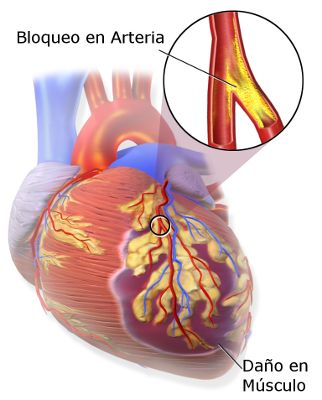

Ataque al corazón o Paro Cardíaco
Un ataque cardíaco grave se produce por el bloqueo de una arteria coronaria. Este bloqueo impide a la sangre llegar al músculo cardíaco.
Una manera simple de determinar si el corazón funciona es evaluando el pulso.
Que hacer en caso de un ataque al corazón
Si la persona no tiene pulso es necesario reiniciar la circulación por medio de la compresión sobre el pecho, practicando Reanimación Cardiopulmonar Cerebral (RCPC), la cual tiene dos propósitos:
- Mantener los pulmones llenos de oxigeno cuando la respiración se ha detenido.
- Mantener la sangre circulando llevando oxigeno al cerebro, al corazón y las demás partes del cuerpo.